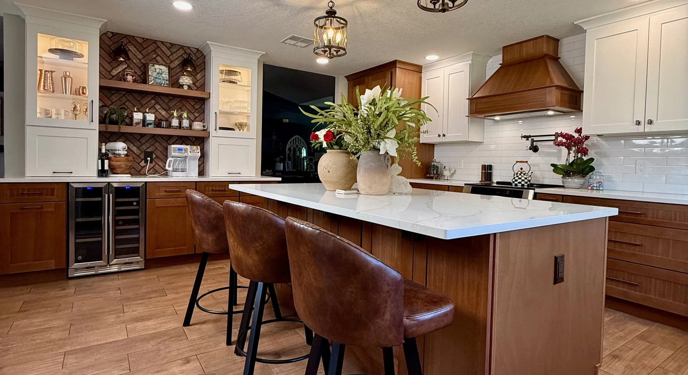
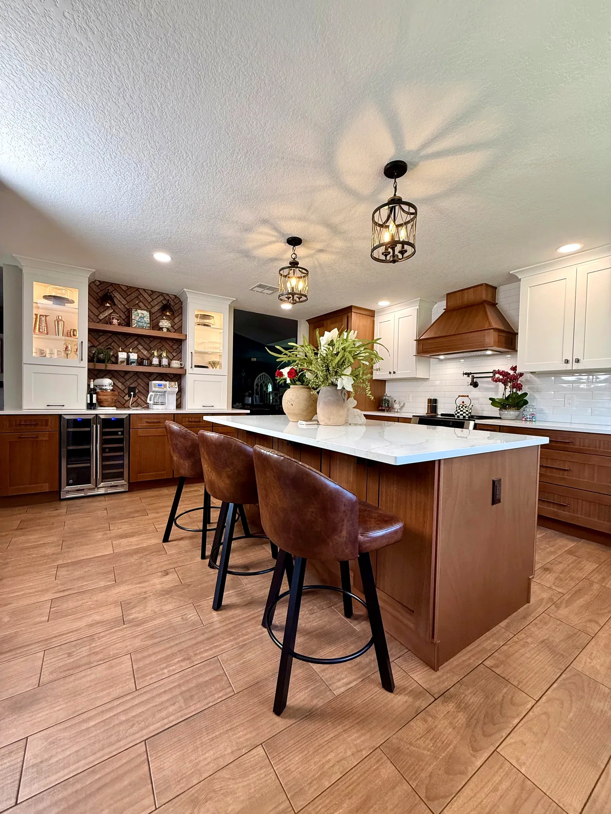
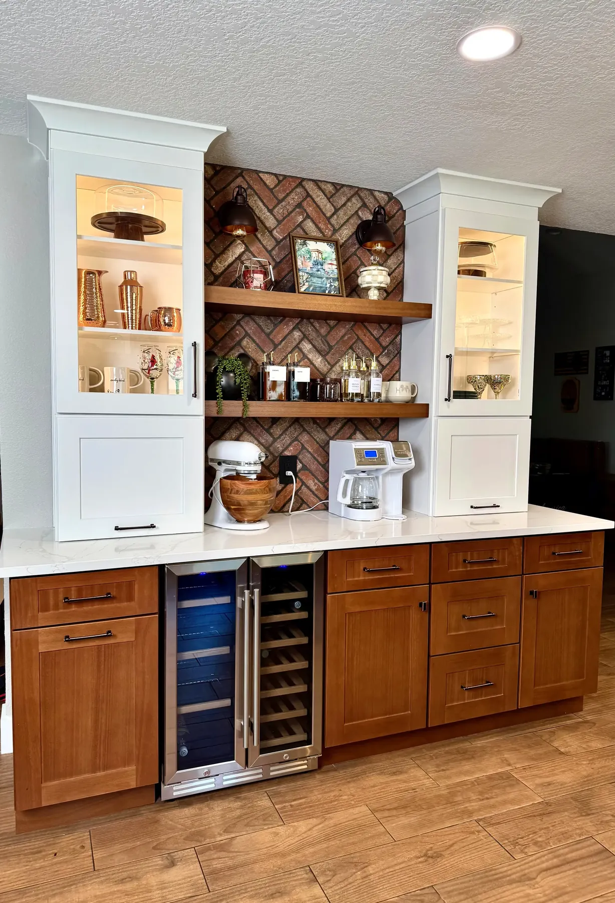

Kitchen remodeling in Orlando & Central Florida
Custom cabinetry, quartz islands and a layout that finally works, designed, priced and built by one team.

Designed, priced and built by one team.
Most kitchen remodels pass through three or four companies before they are finished. At Posada, the people who draw your kitchen are the people who price it and build it, so the finish you approve on paper is the finish you cook in.
From our studio in Casselberry we remodel kitchens across Orlando and Central Florida, from a cabinet-and-counter refresh to an open-concept kitchen with a new island, new lighting and new floors through the whole home.
- Custom and semi-custom cabinetry, classic overlay and premium inset
- Quartz and granite countertops with full-height backsplashes
- Islands, open-concept layouts and layout changes shown in renderings first
- Lighting plans: pendants, under-cabinet and recessed
- Custom wood range hoods, built for your kitchen
- In-stock cabinet collections with a 1 to 2 week turnaround
 Play · 8 min
Play · 8 min
Tour a finished kitchen in Winter Garden.
Walk through the kitchen in the photos above with Mike: the coffee bar, the pot filler behind the range, the custom wood hood and the storage that makes the island work every day. A real Posada project, explained by the owner.
See the full project storyWhat a kitchen remodel costs in Central Florida.
Most companies avoid this subject. We would rather you walk into every estimate, including ours, already knowing what kitchens really cost. These are typical 2026 ranges from our own local projects.
| Kitchens | Typical range |
|---|---|
| Refresh & update | $15,000 – $25,000 |
| Full remodel | $25,000 – $50,000 |
| Luxury & open-concept | $50,000 – $80,000+ |
Ranges reflect typical Central Florida projects in 2026. Your written proposal is exact, and we tell you which range you are in at the consultation.
Financing is available through Hearth (NMLS ID 1628533), which works with a network of lending partners, including 0% APR promotional options for qualified homeowners. Posada is not a lender; rates and terms are set by the lending partner.
See Financing OptionsSix choices that set your range.
Two kitchens of the same size can land in different ranges. These are the decisions that move the number most, and your itemized proposal shows the cost of each one.
- Cabinetry grade: in-stock, semi-custom or fully custom, classic overlay or premium inset
- Countertop material: quartz or granite, slab size and edge profile
- Layout changes: moving plumbing, electrical or walls, or adding an island
- Size: linear feet of cabinetry and square feet of countertop
- Finish level: backsplash, lighting, hardware and a custom wood hood
- Structural or permit requirements, such as a load-bearing wall
Not sure where your kitchen lands? We tell you at the consultation, before any design work begins, so you can plan with real numbers from the first conversation.
Book a complimentary consultation
From in-stock cabinets to fully custom.
Cabinetry sets the tone of the room and most of the budget, so we offer three paths and tell you plainly where each one lands before you fall in love with a door style.
- Custom and semi-custom cabinetry in classic overlay and premium inset, built to your layout
- In-stock framed and frameless shaker collections in white, grey, pearl, blue, natural, onyx and cashmere
- Euro-style collections in glossy white and natural oak
- 1 to 2 week turnaround on in-stock collections
- Lifetime warranty on the cabinetry we install
Countertops, backsplash tile, hardware and lighting are chosen in the same sitting, at our Casselberry studio by appointment or at your home, so the whole kitchen is decided together.
How selections workYour kitchen, step by step.
You will always know what happens next, who is in your home, and what it costs.
Consultation
We meet in your kitchen, listen to how you cook and live, and tell you honestly which budget range your project falls into. Complimentary, with evening and weekend times available.
Design & retainer
Layout, cabinetry, counters, lighting and renderings. A design retainer of $250 per bathroom or $500 per kitchen is credited to your project once the agreement is signed.
Itemized proposal
Line by line: labor, materials and timeline. Pick the upgrades you want and leave out anything you don't, before you sign.
Build
Your project manager, our own team, and a clean site at the end of every day. Permits included when your project needs one; we coordinate it through our licensed general contractor partner.
Walkthrough & warranty
A final walkthrough with every detail checked, a three-year labor and installation warranty in writing, and a follow-up from Mike to make sure you love it.
Kitchens their owners still talk about.
on Google
"We chose Posada for our new floors and full kitchen remodel and we couldn't be happier. Mike and his team are professional, hard workers, and very detail oriented. They were respectful to our home and went above and beyond to satisfy our vision. They always cleaned up at the end of the day."
"Mike and his team did an excellent job remodeling our kitchen. His attention to detail and willingness to satisfy us were top notch. His recommendations and communication were excellent and timely. We felt heard when we made suggestions. We would hire him and his team again in an instant."
"We couldn't be happier with our kitchen remodel! From start to finish, the entire experience with Posada Remodeling was exceptional. The team was professional, reliable, and truly passionate about their work. They took the time to understand our vision and turned it into something even better."
Before you call.
How much does a kitchen remodel cost in Orlando?
Most Posada kitchens fall into three ranges: a refresh and update at $15,000 to $25,000, a full remodel at $25,000 to $50,000, and a luxury or open-concept kitchen at $50,000 to $80,000 and up. Ranges reflect typical Central Florida projects in 2026. Your written proposal is exact, and we tell you which range you are in at the consultation, before any design work begins.
How long does a kitchen remodel take?
It depends on scope. Industry guides put a midrange kitchen remodel at roughly four to eight weeks of construction, and a full remodel with layout changes at eight to twelve weeks or more. Custom cabinetry and countertop fabrication add lead time before work starts, while our in-stock cabinet collections turn around in one to two weeks. Your schedule is set once your selections are final and written into the proposal.
Can we keep our current layout?
Yes, and it is often the smartest place to start. Keeping plumbing, electrical and walls where they are puts more of the budget into cabinetry, counters and lighting, and in Orange County replacing cabinets and countertops in the same layout does not require a permit. If moving a wall or adding an island is what the room needs, we show it in renderings first. Permits included when your project needs one; we coordinate it through our licensed general contractor partner.
Do you offer in-stock cabinets for a faster remodel?
Yes. Our in-stock framed and frameless collections include shaker doors in white, grey, pearl, blue, natural, onyx and cashmere, and euro-style doors in glossy white and natural oak, with a one to two week turnaround. They carry the same lifetime warranty as every cabinet we install and suit a refresh or a full remodel on a tighter schedule. Semi-custom and custom cabinetry remain available when the design calls for it.
Kitchen remodeling across Central Florida.
Kitchen design and remodeling across Orange, Seminole, Osceola and Lake counties, from our studio in Casselberry. Design consultations in Winter Garden, by appointment.
Planning the bathrooms too? See bathroom remodeling, or meet the team on our About page.
All service areas- Kitchen remodeling in Winter ParkOrange
- Kitchen remodeling in Winter GardenOrange
- Kitchen remodeling in Lake MarySeminole
- Kitchen remodeling in OviedoSeminole
- Kitchen remodeling in WindermereOrange
- Kitchen remodeling in LongwoodSeminole
- Kitchen remodeling in CasselberrySeminole
- Kitchen remodeling in SanfordSeminole
Tell us about your kitchen.
A complimentary in-home design consultation. We listen first, then tell you honestly which range your kitchen falls into. No obligation, and we never share your information.
Call or text · We reply within 24 hours